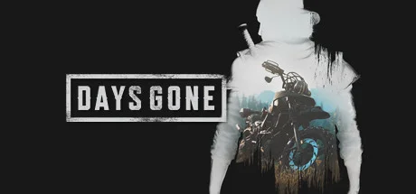
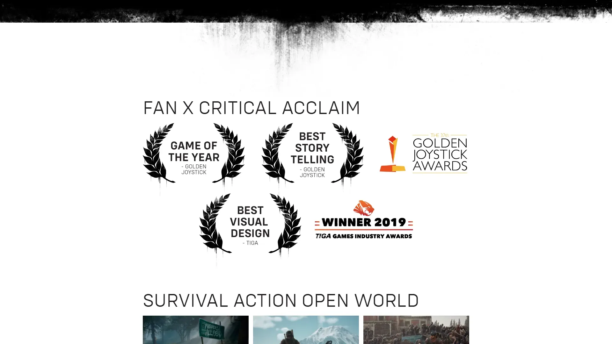
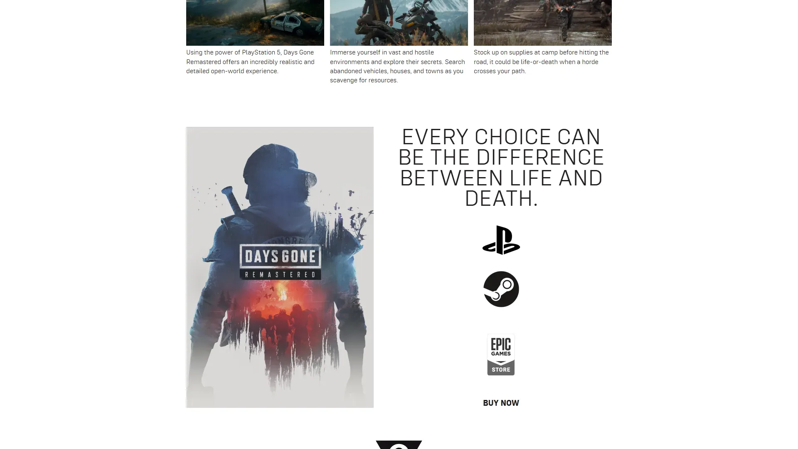
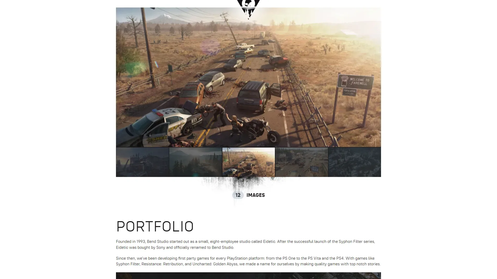
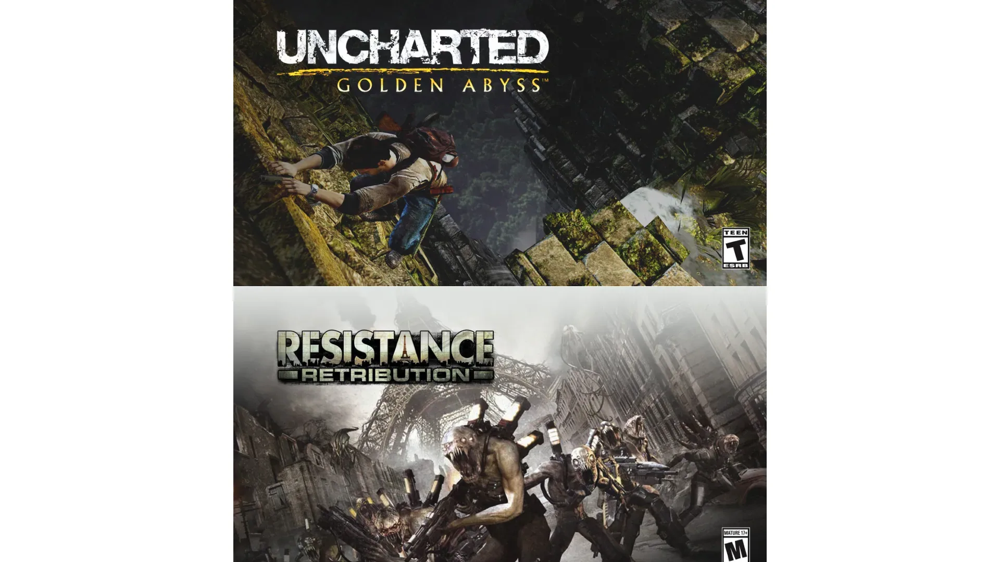
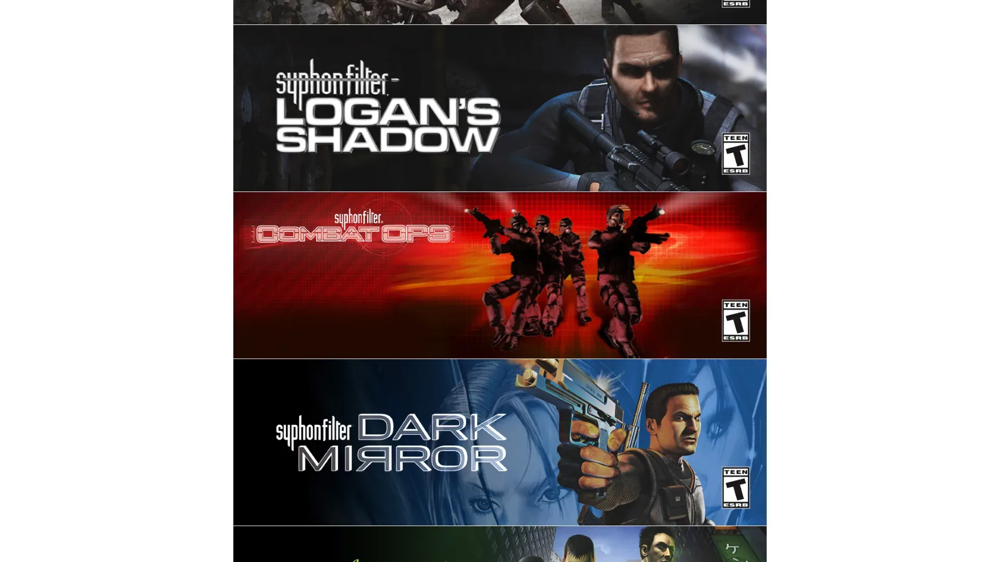
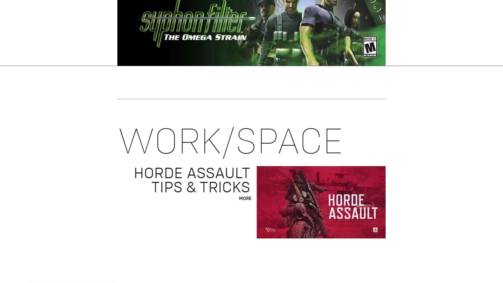
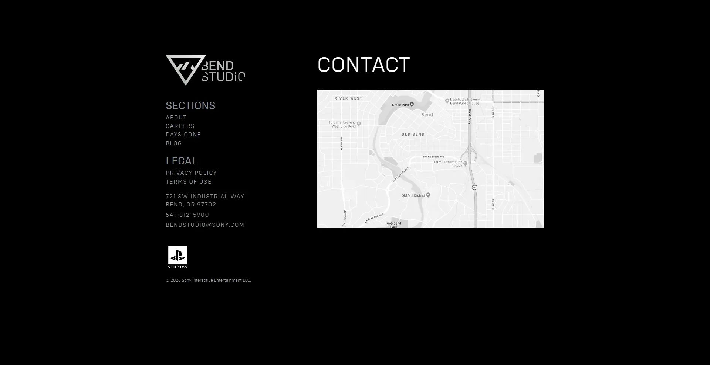

末世摩托车开放世界，大规模尸潮视觉标志。








想象一片近未来美国西北俄勒冈州——病毒爆发约 2 年后的末日。感染者被称为 Freakers，夜行、怕水、数百只组成尸潮 Horde 一起奔袭活人。你穿过太平洋西北温带雨林、火山湖国家公园 Crater Lake、被遗弃的小镇 Farewell、山间高速公路——苔藓爬上加油站招牌、苔原覆盖锈蚀皮卡、松林里偶尔传来摩托引擎。这是太平洋西北自然纪录片 × 飞车党公路片反差缝合。SIE Bend Studio 把俄勒冈做成北美最美的末日。
你扮演Deacon St. John——病毒爆发前是 Mongrels MC 飞车党。爆发当夜他和兄弟 Boozer 把妻子 Sarah 送上撤离直升机，自己留下处理事务——那架直升机消失在末日浓烟里再没回来。两年后他靠摩托车在俄勒冈替营地接赏金、清剿尸潮维生。Deacon 粗鲁、自私、不讨喜，但他对 Sarah 那份执念让他像个真实的人——每条线索都让他骑得更远。
那次你第一次在加油站院子被 300 头规模尸潮围住、土制炸药+自动步枪+最后一滴汽油同时燃尽的瞬间，SIE Bend Studio 把开放世界尸潮 AI 做到 PS4 末期工业级——你打的不是怪，是整代飞车党公路片末日精神状态的具象化；那场你跟旧无线电信号穿越 Crater Lake 找到 Sarah 名字的桥段——执念让你明白「我妻子真的死了吗」这道题，Deacon 自己都不敢回答；那次你在 Lost Lake 营地夜里和 Boozer 喝完最后一罐啤酒的对话节点，太平洋西北末日终于露出温柔。这不是关于打败尸潮的故事，是「Deacon 还在等谁回信吗」的故事——下一段山路去哪个营地？
太平洋西北末世 × 飞车党公路美学，是 SIE Bend Studio 把美国西北温带雨林真实地貌（道格拉斯冷杉松林、火山湖、苔藓岩壁、山间高速、加油站小镇）和飞车党亚文化视觉传统（皮夹克 + 络腮胡 + 摩托引擎 + Mongrels MC 队徽）反差融合在近未来病毒末日 + 尸潮防御外壳里的混血美学。底色是《最后的我们》× 《疯狂麦克斯》双重血统；变异在于把摩托车做成生存核心——加油修车推车都是叙事。色彩锁定松林墨绿 + 苔藓灰 + 引擎油锈红三色。
「飞车党 + 末日公路」视觉线跨越半世纪。1969 年《逍遥骑士》定义美国摩托公路片视觉源头——本作精神祖父。1979 年乔治·米勒《疯狂麦克斯》定义末日公路飞车党视觉母版。1981 年《疯狂麦克斯 2》把末日公路推到电影巅峰。2010 年剧集《行尸走肉》定义当代尸潮叙事流行化。2008 年剧集《飞车党》把美国摩托俱乐部文化做到剧集工业级——Mongrels MC 直接精神参照。2015 年俄勒冈州 PBS 纪录片让太平洋西北温带雨林+Crater Lake 成为大众视觉档案。2013 年《最后的我们》定义当代叙事驱动末日生存品类。2019 年《往日不再》在虚幻 4 引擎下登场——尸潮 AI+摩托车据点把太平洋西北末日工业级化，2025 年凭口碑逆转翻身。
基于体验清单 · 审美偏好 · IP故事三维度综合选出